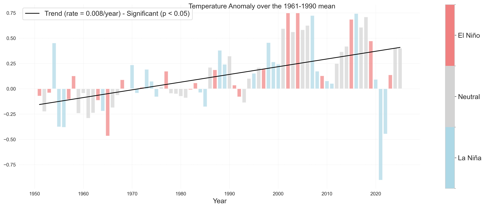
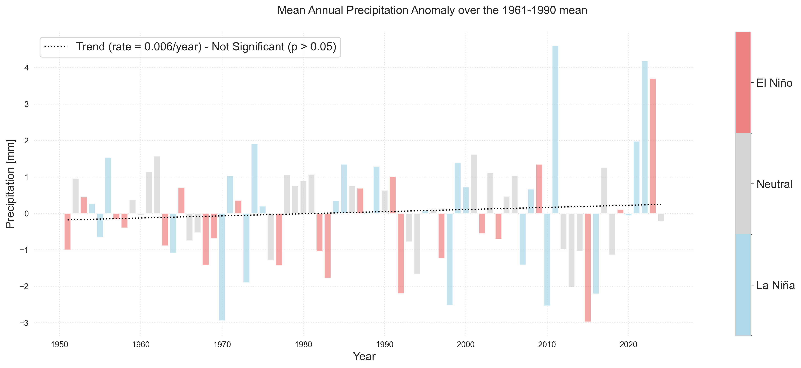
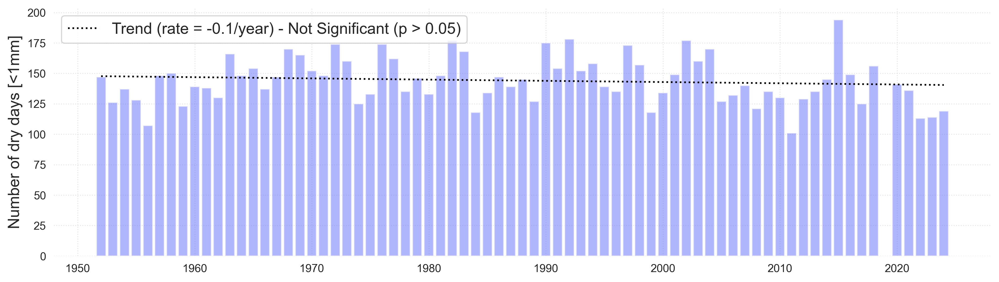
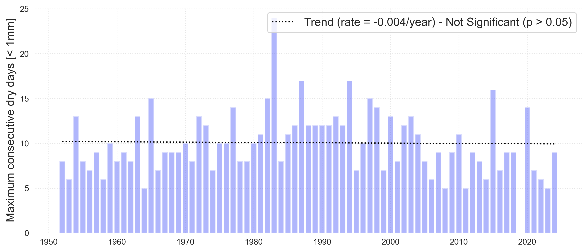
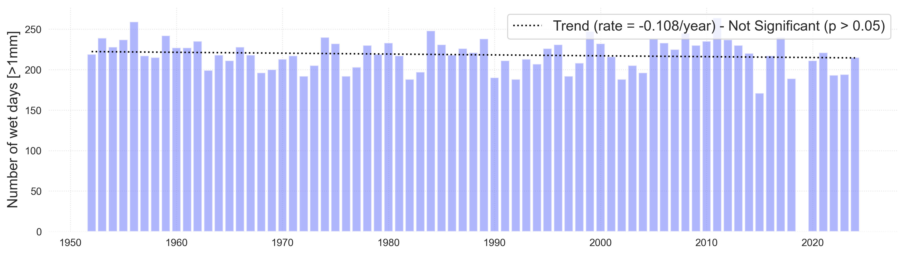
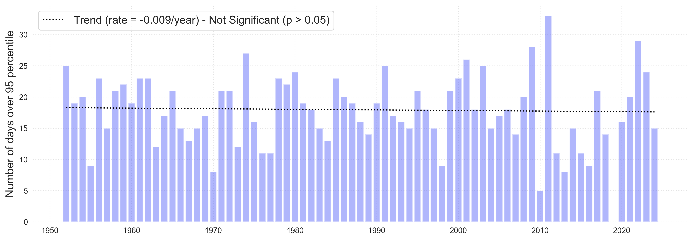

CLIMATE INDICATORS FOR PALAU
These example product sets are generated through a series of jupyter notebooks. For more details, click on the linked notebooks in the indicator column.
| Variable | Indicator | Indicator Type | Historical | Projections |
|---|---|---|---|---|
| Atmosphere | 1. Atmospheric Concentration of CO2 | 1.1.1 Linear Trend |
Figure 1 Monthly Mean Concentration of Atmospheric CO2 at Mauna Loa since 1959.
The blue line represents the monthly mean values, centered in the middle of each month.
The red line represents the same, after correction for the average seasonal cycle.
The solid black line represents the trend, which is statistically significant (p < 0.05).
The annual oscillations at Mauna Loa are due to the seasonal imbalance between the photosynthesis
and respiration of plants on land. From NOAA ESRL Global Monitoring Division.
https://www.esrl.noaa.gov/gmd/ccgg/trends/
|

|
| 2. Surface Temperature | 1.1.1 Mean Surface Temperature Linear Trend |
Download

Figure 2 Annual mean temperature anomalies relative to 1961–1990 climatology at Koror.
The solid black line represents the trend, which is statistically significant (p < 0.05).
Shading in the bar plots represent El Niño (red), La Niña (blue) and Neutral (grey) phases of ENSO
as defined by values of the Oceanic Niño Index (ONI).
|
|
1.1.1 Maximum and minimum temperature |
Figure 3 Annual maximum (red) and minimum (blue) temperature at Koror.
The solid black line represents the trend, which is statistically significant (p < 0.05).
The dashed black line represents a trend that is not statistically significant.
|
|
1.1.1 Amount of Hot Days and Cold Nights |
Figure 4 Annual percent of hot days and cold nights relative to 1961–1990
climatology at Koror. Hot days are defined as days above the 90th percentile for that
same calendar day (e.g., January 15th) from the 1960–1990 period, while cold nights
are defined as days below the 10th percentile for that same calendar day in the 1960–1990
period. The solid black lines represent statistically significant trends (p < 0.05).
|
|
| 3. Rainfall | 3.1 Total wet day rainfall |
Download

Figure 5 Annual total rainfall anomalies relative to 1961–1990 climatology at Koror.
Units are mm/year. The dashed black line represents a trend that is not statistically significant.
Shading in the bar plots represent El Niño (red), La Niña (blue) and Neutral (grey) phases of ENSO
as defined by values of the Oceanic Niño Index (ONI). Note the high annual and decadal variability.
|
|
3.2. Dry Conditions |
Download


Figure 3 Trends in annual dry days (top) and maximum number of consecutive days (bottom)
over the period 1951–2024 at Koror. Dry days are defined as days below 1mm (0.04 inches) threshold.
Consecutive dry days is a measure of the longest sequence of days in a year where rainfall is less
than 1 mm (0.04 inches).
|
|
3.3. Wet Conditions |
Download


Figure 3 Trends in annual wet days (top) and days with heavy rainfall (bottom)
over the period 1951–2024 at Koror. Wet days are defined as days above 1mm (0.04 inches).
Heavy rainfall days are defined as days where rainfall is greater than 47mm (1.9 inches),
the 95th percentile.
|
|
{kind=link}
{kind=link}
{kind=link}
{kind=link}